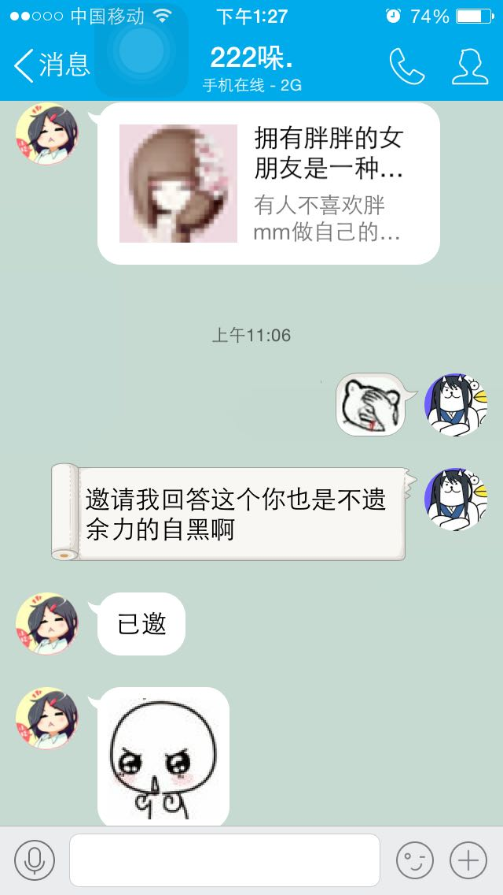
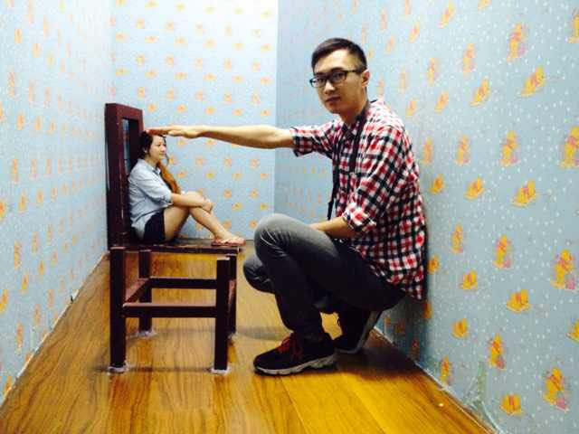
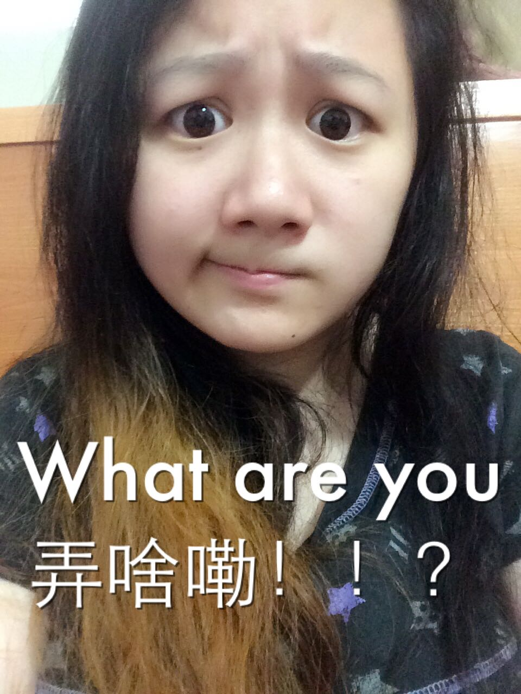

正文:
2016.5.20求婚，2016.6.6领证，大概是为了难得的666吧（笑）
———————更新————————
人生第一次破百赞居然是因为被邀yao请qiu秀恩爱，真是一件令人悲伤的事情。
评论里有位少年说我和二姑娘的体型应该和
@青蓝画室董骏飞在这问题的回答的图里的样子差不多，这句评论让某人炸毛了。
于是来放图。图在最后。
———————↓正文↓———————
谢二姑娘邀（谢……个屁啊喂！！！
日常一：
二：“啊啊啊我好胖，我要减肥！今天开始不吃晚饭了！”
我：“好的，那晚上不做饭了，我自己随便吃点。”
19:00 pm
二：“点外卖了没，我要吃大鸡腿。”
我：“……哦。”
日常二：
一边看电视一边捏她的软肚子。
“啪！”手被打开。
二：“呜呜呜为什么捏我肚子。”
我：“因为有肉。”
继续捏。
这时二姑娘脸上会出现一副羞愤难耐又强行忍受的抖M表情（雾）。
日常三：
二：“好饿好饿好饿！”
我：“走，去吃好吃的，想吃什么？”
二：“呜，算了，要胖死了，不吃了……”
我：“……”
一分钟后。
二：“好饿！！！！！”
我：“我去买点水果。”
日常循环：
叫她胖子/我好胖→宣jiao称xiao减肥→同意并支持→饿了→放弃并买好吃的→叫她胖子/我好胖
顺便问一句，这循环有解么？
二姑娘是一个很软萌的微胖（雾）姑娘，身高158，体重63kg。我身高180，体重62kg。最喜欢的事儿是吃。最喜欢吃的是海鲜刺身，经常自己买回来自己做，吃的时候会一副满gao足chao的表情。和她一起会经常到各大商圈去开火车（逛吃逛吃逛吃）。如今已经成为大众点评的忠实用户。
二姑娘胸很大，也有小肚子，身体非常软，手感非常好，对于我这种体验不到大块儿柔软脂肪触感的人来说，是一件非常幸福的事情。
二姑娘性格很开朗，会无目的的撒娇卖萌，但为人处世非常的直接清楚，需要猜的地方非常少。爱憎分明，对喜欢相处的人和讨厌的人是截然不同的两种态度，开心和不开心也都明显的放在脸上。很乐意和我沟通，哪怕再不高兴的时候，也都可以好好沟通到事情解决，并且能商量出一个双方都能接受的方案。
说实话，和她在一起的时候，是不会想到爱情的，因为它实实在在的融入日常生活，相处的每时每刻都可以感受到，所以从来不需要放在嘴上。
而在妄想要抱起她的时候，脑子里冒出一句，“胖的好，我选择死亡。”

这是近两年前的图。

这是两个月前的图。
（并不会告诉你们我做了一套表情）
